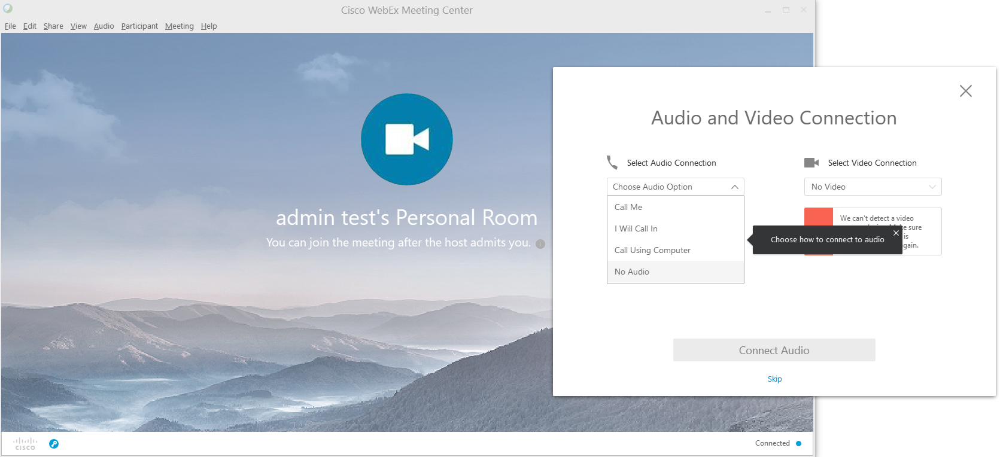
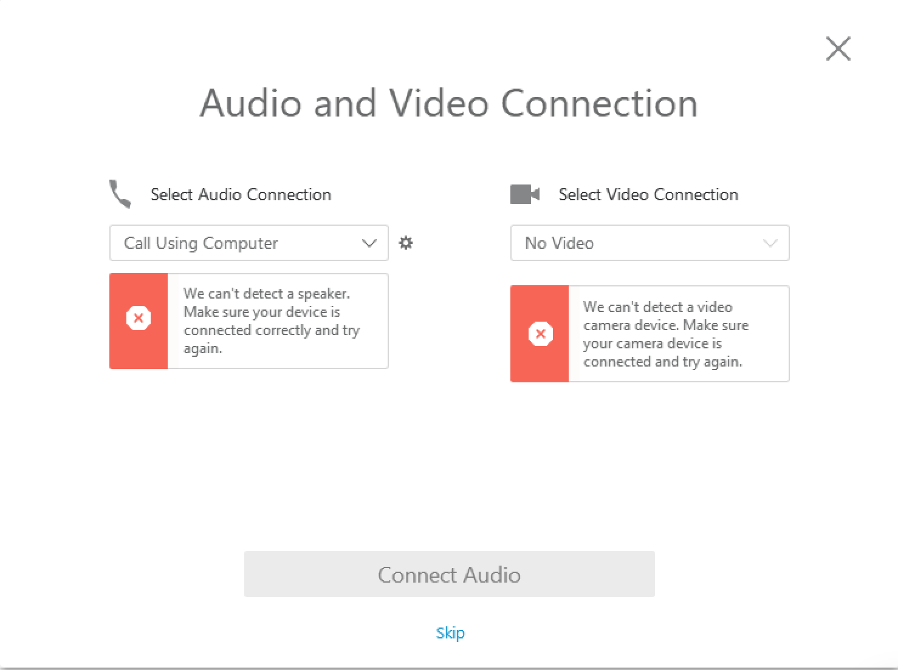
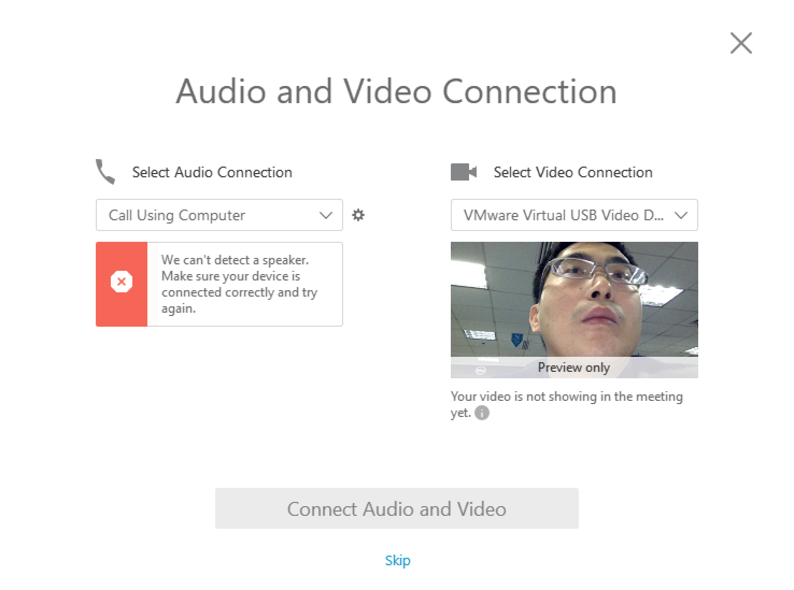
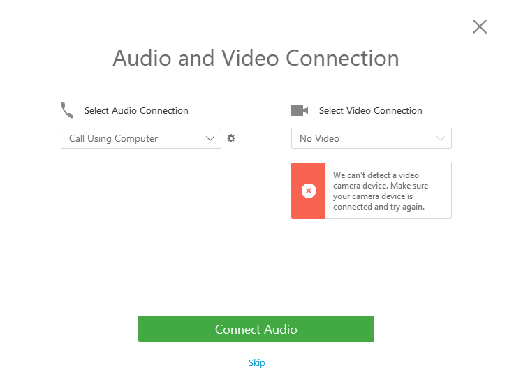
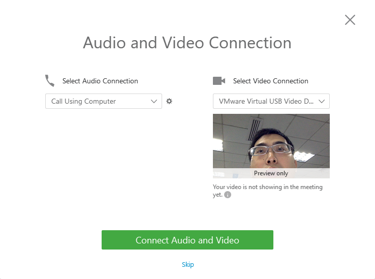

Audio and Video Connection¶
US25508¶
- As a developer, when not show A/V connection window, I need make sure mainframe window is OK
- verify no session relevant case
- verify no device relevant case
- verify session and device relevant case
- Learn audio and video connection relevant code
Output¶
- Verify 7 test case
- no session but has device case
- no audio and no video session
- no audio but has video session
- no video but has audio session
- no device but has session case
- no audio and no video device
- no audio but has video device
- no video but has audio device
- has audio and video device
- Know Audio and Video Connection relevant logic
- Which docshow parameter enable/disable popup
- How to check relevant webex trace
Key Code¶
- CPfwServiceMgr
- ShowAudioVideoDialog
- CPopupDlgMgr
- GetDlgInstance, DLG_AUDIO_VIDEO_WIZARD
CDlgAudioVideoWizard
CDlgPanelviewConfigConnectionPage
CWndPanelviewConfigConnectionPage
CAudioVideoWizardWrapper
CDlgWebcamDetected
CEmbedWndVideo
CEmbedWndUsingComputer
CAudioTestWizardWrapper
CAudioVideoWizardWrapper::IsNeedEnterAudioVideoWizard¶
- Return False
- TRUE == m_bEnteredAudioVideoWizard
- CMCServiceMgr::Initialize
- CPfwServiceMgr::ShowAudioVideoDialog
- CPopupDlgMgr, GetDlgInstance(DLG_AUDIO_VIDEO_WIZARD)
- CDlgAudioVideoWizard::GetInstance
- conIPopupDlgBase->ShowModelessDlg()
- CDlgAudioVideoWizard::OnInitDialog, SetInAudioVideoWizardFlag(true)
- CAudioVideoWizardWrapper::SetInAudioVideoWizardFlag(true)
- m_bEnteredAudioVideoWizard = true
True == CConfigWrapper::IsEvent(), ec
- True == CMCServiceMgr::IsInLockRoom
- PMR_LOCK_ROOM
- PMR_WAITTING_ROOM
True == CMCServiceMgr::IsNeedEnterVMRWaittingRoom
True == CMCServiceMgr::IsNeedEnterVMRLockRoom
- False == CConfigWrapper::IsAudioVideoWizardEnable
- F4322>Ops team should able to turn on/off new AV
- CConfContextMgr::IsAudioVideoWizardEnable
- Docshow parameter: AutoPopupAVDialog
- False == CAudioVideoWizardWrapper::IsNeedEnterAudioWizard
- True == CSmAudioStatusWrapper::IsShowLegacyVoIP
- True == (SessionTypeOptions & SESSION_TYPE_ENABLE_VOIP(0x0200))
- False == (TSPHybridFlag && TSPTelephonyFlag)
- True == bAutoVoIP , WBXPBAutoVoipFlag && m_bVoIPPortionEnabled && $HybridTelephoneOnlyFlag
- True == bAutoCallFromURL, eAutoCallBackEnabled
- True == bAutoCallFromPB, $TELEPHONE_NUM
- False == CAudioVideoWizardWrapper::IsEnableAttendeeJBHAudio
- AUDIO_PAGE_OPTION_NONE == GetAudioTypeStatus
- AUDIO_PAGE_OPTION_SPECIAL == GetAudioTypeStatus
- AUDIO_PAGE_OPTION_VOIP == GetAudioTypeStatus
- False == CAudioVideoWizardWrapper::IsNeedEnterVideoWizard
- False == CSmSvcVideoSessionMgr::IsSessionTypeEnable
- CMCSiteConfigMgr::InitSiteConfig
- dwEverestOption & SESSION_TYPE_ENABLE_VIDEO (0x02)
- CMCSvcVideoSessionMgr
- g_pMCServiceMgr->m_mcVideoMgr.SetSessionTypeEnable
- Return True
- True == CConfigWrapper::IsAudioVideoWizardEnable
- True == CAudioVideoWizardWrapper::IsNeedEnterAudioWizard
- True == CAudioVideoWizardWrapper::IsNeedEnterVideoWizard
UI Resource¶
17196: IDC_MANAGE_PANELVIEW_CONFIG_CONNECTION_PAGE
- 17203: IDC_STATIC_CONNECTION_PAGE_TITLE
- Audio and Video Connection
- 17206: IDC_PUSHBUTTON_CONNECT_AUDIO_AND_VIDEO
- pfwres.dll
- 60083: IDS_AVW_CONNECT_AUDIO_VIDEO, Connect Audio and Video
- 60084: IDS_AVW_CONNECT_AUDIO, Connect Audio
- 15527: IDC_STATIC_NOVIDEO_TEXT, We can’t detect a video camera device
- 15225: IDC_WINDOW_NOVIDEO_ALERT
- 17335: IDC_STATIC_NO_SPEAKER_MESSAGE
- 17333: IDC_WINDOW_NO_SPEAKER_WARNING_WND
Q&&A¶
- Where to new CWebExMgrCtl
CAtMgrContainerWnd::InsertWebExMgr
- WebExMgr.cpp::ATNewInstance
- pMgrCtl = new CWebExMgrCtl
- g_pWebExMgrCtl = pMgrCtl
- Legacy VOIP will not show audio video dialog
CSmAudioStatusWrapper::IsShowLegacyVoIP
- CSmAudioSessionMgr::IsSessionTypeEnable, APPSVR_SESSION_MM_AUDIO
- SessionTypeOptions & SESSION_TYPE_ENABLE_VOIP(0x0200)
- Where to call ShowAudioVideoDialog
_tWinMain
g_pMCServiceMgr
CAtmgrDownloadMgr::OnDownloadFinish, WM_DOWNLOAD_FINISH
CAtmgrMeetingMgr::OnDownloadFinish, WM_DOWNLOAD_FINISH
CAtmgrMeetingMgr::StartMeeting
CWebexmgrLoader::StartClient
CWebexmgrLoader::FinishCall
webexmgr.dll::FinishCall2
CWebExMgrCtl::MC_FinishCall
- CMCServiceMgr::Initialize
- InitializeUI
- ShowMainFrameWnd
- ShowAudioVideoDialog
- How to show Audio Video Dialog
- CPfwServiceMgr::ShowAudioVideoDialog
- CPopupDlgMgr::GetDlgInstance(DLG_AUDIO_VIDEO_WIZARD)
- conIPopupDlgBase::ShowModelessDlg()
- CAudioVideoWizardWrapper::IsNeedEnterAudioVideoWizard
Docshow parameter: AutoPopupAVDialog
- CAudioVideoWizardWrapper::IsNeedEnterAudioWizard
CAudioVideoWizardWrapper::IsNeedEnterAudioWizard, bAudioSessionSucc=TRUE => TRUE
- CAudioVideoWizardWrapper::IsEnableAttendeeJBHAudio return TRUE
- pContextMgr->GetPrivilegeExt() & PRI_JBH_FOR_TELEPHONY
IsEnableAttendeeJBHAudio return TRUE, CAudioVideoWizardWrapper::IsNeedEnterAudio, emAudioOption !=1,3,4 => TRUE
- CAudioVideoWizardWrapper::IsNeedEnterVideoWizard
- m_pContextMgr->GetSiteEnableOption, SessionTypeOptions
- CMCSiteConfigMgr::InitSiteConfig, dwEverestOption, SESSION_TYPE_ENABLE_VIDEO, 0x02
- APPSVR_SESSIONTYPE_MM_VIDEO
- CMCSvcVideoSessionMgr::SetSessionTypeEnable
- CSmSvcVideoSessionMgr::IsSessionTypeEnable
- CAudioVideoWizardWrapper::IsNeedEnterVideo
- Enable Audio Video Wizard Flag
- F4322
- Docshow parameter: AutoPopupAVDialog
- Docshow parameter: AVDialogAutoOpenCamera
- Audio device list
- CHybridVoIPModule::AW_GetDeviceList
- CHybridVoIPModule::AW_GetSelectedDevice
- CAudioWizardImpl::GetInitRecordDevice
Video device list
- Enable Audio and Video Connect button
- CWndPanelviewConfigConnectionPage::EnableAudioVideoConnectButton
- MC objects
- MC_CreateMeetingObject
- CAtmgrAgentWnd
- CAtmgrDownloadMgr
- CAtmgrMeetingMgr
- CWebexmgrLoader
- In atmgr which class will load ini file
- CAtmgrParamMgr
- SetCmdLine
- LoadIniFile
- Where to load webexmgr.dll
- CWebexmgrLoader::StartClient
- CWebexmgrLoader::InsertWebExMgr
- Where to load confmgr.dll
WebEx_SetConferenceMgr_Internal
- CMCDocshowMgr::LoadConfMgr
- CMCDocshowMgr::GetConfMgrPath
- Where to install exception handler
- WebExMgr.cpp::FinishCall2
- TryInstallExceptionHandler
- Attendee in the lobby room, Host admit
- IDC_MANAGE_BEFOREJOINHOST_PMR, CDlgBeforejoinhostPmr
- CsmPDUMgrWrapper::OnDataIndication, MC_PDU_PMRMEETING_HOST_ENTERLOCKROOM_RSP
- HandlePDU_EnterLockRoom
- Fire_OnPDUReceived_EnterLockRoom
- CPDUMgrEvent::OnPDUReceived_EnterLockRoom
- CMCServiceMgr::OnEnterLockRoomRsp
- CMCServiceMgr::ContinueMeetngFromVMRLockRoom
- CMCServiceMgr::ContinueMeetingFromVMRWaitingRoom
- Lobby Panel in host side
- 7111: IDD_MANAGE_LOBBY_PANEL
- CDlgLobbyPanel
- How to create quickstart window
- CFramePanelView::CreateQuickStartWnd
- CCComUIMgr::GetQuickStartDlgInstance
- 1946: IDC_WND_QUICKSTART
Test Case¶
lock room and host admit – Found one issue
- no audio and no video session
- config in site super admin
no audio and no video device
no audio but have video device
no video but have audio device
- audio and video device
- 